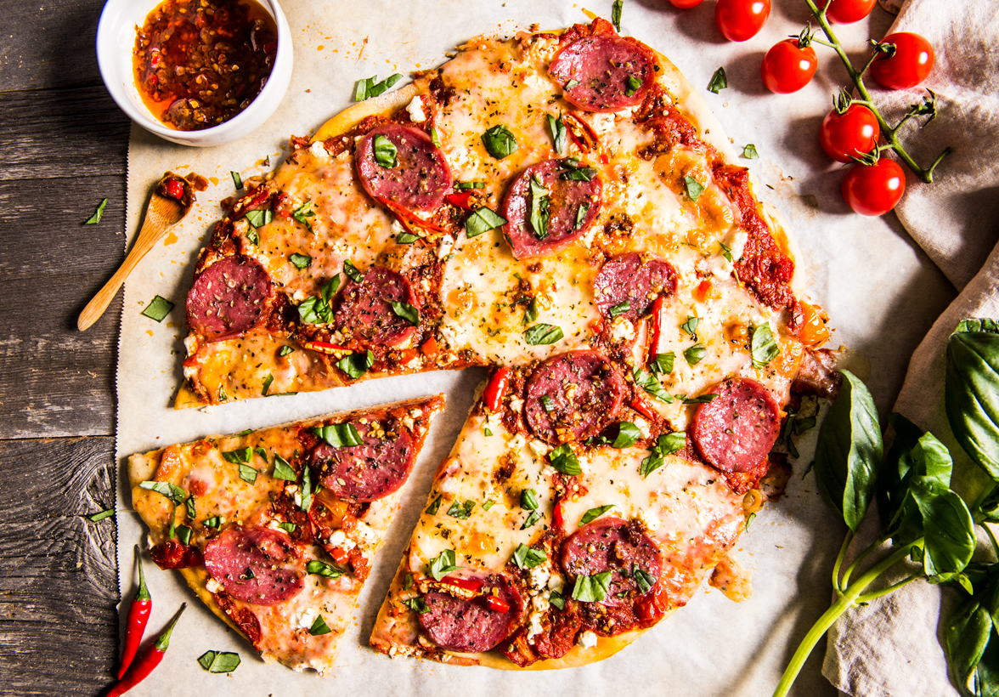

Pizza diavola tähendab kuradite pitsa ja on üsna vürtsikas väike kurat
ning üks mu lemmikpitsasid. Kui teile meeldivad vürtsikad, kuumad ja tšillimaitsed,
siis te naudite seda pitsa retsepti

koostisoasd
2 pitsa taignapalli
100g mozzarellat
400g Passata
200 g vürtsikat salaamit
2 värsket tšillit
oliivõli
ja Soola
Valmistamine
Kuumutage ahi 210 kraadini
Hankige oma pitsataigna pallid (sõltuvalt sellest, kui palju teete) ja rullige need umbes 12 tolli läbimõõduga, kasutades oma käsi ümmarguse venitamise tehnikaga või taignarulli abil.
Valmistage nüüd valmistatud tainaga meie kaste valmis, segades passatat kolm supilusikatäit oliiviõli ja hea näpuotsaga soola.
Viiluta oma salaami nüüd õhukesteks viiludeks ja haki värsked tšillid ka peeneks.
Seejärel viilutage või tükeldage oma mozzarella ja oleme valmis pitsat riietama.
Lisage igale alusele pool tomatikastmest ja jaotage ühtlaselt, jättes pool tolli perimeetri.
Lisa mozzarella, salaami ja lõpeta tšilliga.
Nirista lõpuks veel veidi oliiviõli ja sa oled valmis oma pitsa-diavolat küpsetama.
Pange ahju kümneks minutiks või kuni see on kuldne.